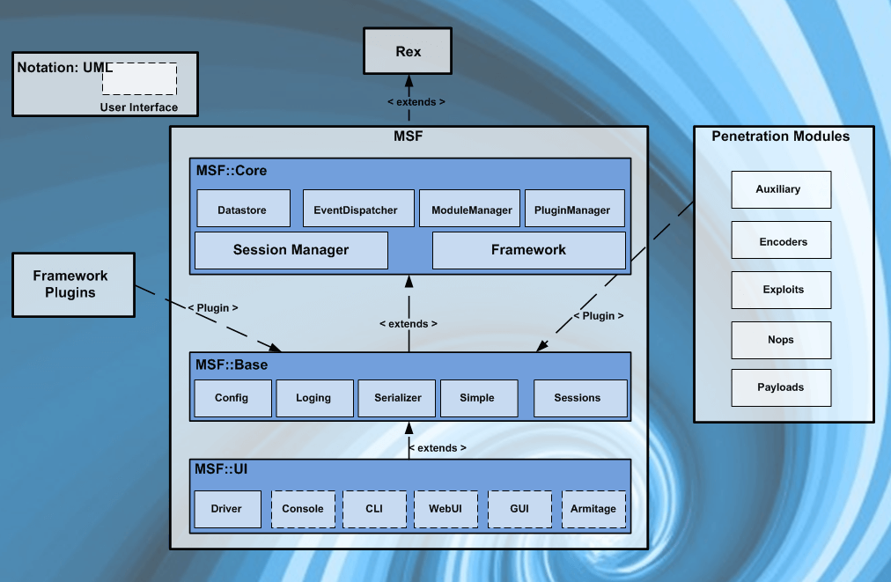
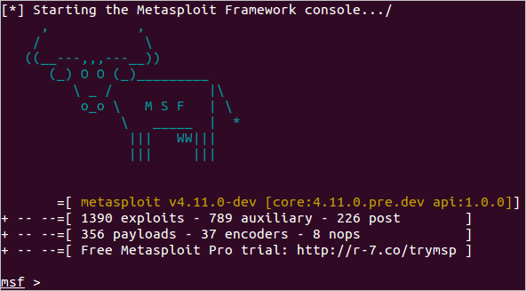
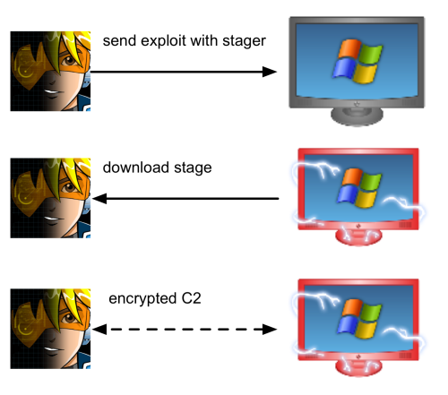

Metasploit Intro
عدنا من جديد ، هذا المقال عبارة عن مقدمة عن المكونات الرئيسية المُستخدمة في مشروع الميتاسبلويت
الميتاسبلويت (Metasploit) أكثر أدوات الاختراق استخداما في مجال الاختراق . فهو عبارة عن اداة قوية تستطيع دعم جميع مراحل الاختراق ابتداءاً من جمع المعلومات الى مرحلة ما بعد الدخول الى جهاز الضحية
الميتاسبلويت عبارة عن نسختين :-
- ال Metasploit Pro : النسخة المدفوعة منه ومن خلاله تستطيع إدارة المهمات بشكل تلقائي وأيضا تحتوي على واجهة مستخدم رسومية GUI
- ال Metasploit Framework : هذه نسخة مفتوحة المصدر من مشروع الميتاسبلويت وتعمل عن طريق سطر الأوامر . في هذا المقال سنركّز على هذه النسخة وتكون موجودة تلقائيا على أي نظام كالي لينكس

- ما هو الMetasploit Framework ؟
= هو مجموعة من الأدوات والسكريبتات التي تسمح لنا ب جمع المعلومات ، عملية الفحص (Scanning) , استغلال الثغرات ، ما بعد الدخول لجهاز الضحية ، والمزيد . مع أن الوظيفة الأساسية للميتاسبلويت هي اختبار الاختراق إلا أنه قد يساعد في بحث عن الثغرات و الexploit development .
- بعد معرفتنا بال Metasploit Framework . ما هي أهم مكوناته .. ؟
= لترتيب المعلومات ، يقسّم مشروع الميتاسبلويت الى 3 مكونات :-
- ال msfconsole : وهي واجهة سطر الأوامر الأساسية
- ال Modules : وهي سكريبتات موجودة هناك تساعد في الاختراق وتقسّم أيضا الى : Exploits , Scanners , Payloads الى آخره ... وسيتم شرحهم لاحقا .
- الTools : وهي أدوات قائمة بذاتها تساعد على البحث عن الثغرات ، تقييم نقاط الضعف ، اختبار الاختراق ومن هذه الأدوات الmsfvenom و pattern_offset .
بالنسبة لل msfconsole ، يكفي كتابة msfconsole في الterminal وسيحمّل الmetasploit . أما الmodules هن عبارة عن مكونات صغيرة في داخل الميتاسبلويت وتم بناءهن لكي ينفّذوا مهمة محددة مثلا : فحص منافذ الهدف ، او القيام بهجوم Brute-force .

قبل التعمّق في فهم الmodules يجب علينا توضيح المصطلحات التالية :
- ال exploit : هو كود يستغل ثغرة موجودة على جهاز الضحية
- ال vulnerability : هو خطأ برمجي ، منطقي ، او خطأ بالتزيين موجود على جهاز الضحية من خلال هذا الخطأ تستطيع التأثير على جهاز الهدف . استغلال هذه الثغرة قد يؤدي الى تسريب معلومات مهمة او السماح للمهاجم لتنفيذ كود معيّن على جهاز الضحية
- ال Payload : هو exploit يستغل الvulnerability , لذا إذا أردنا أن يحصل الexploit على نتائج محددة نريدها (الحصول على وصول على جهاز الضحية ، او قراءة معلومات سرية على جهاز الهدف ، الخ..) سنحتاج لاستخدام Payload . لأن الPayloads هي الأكواد التي ستنفّذ على جهاز الهدف .
لنبدأ بشرح مكونات الModules :-
- الAuxiliary : هي أي module داعمة ، مثل الScanners , Crawlers والfuzzers تستطيع إيجادهن هناك .
- الEncoders : هي أكواد تسمح لك بتشفير الexploit وال payload لتجعل احتمالية اكتشافه من الanti-virus ضئيلة . signature-based anti-virus عبارة عن قاعدة بيانات من أشهر الثغرات والمخاطر الأمنية ، ويكتشف مضاد الفيروسات هذه المخاطر عن طريقة مقارنة الملفات المشبوهة بقاعدة البيانات الموجودة . وبعد ذلك ترفع تنبيه اذا كان هناك توافق . لذا الencoders تقلل من احتمالية اكتشاف الexploit والpayload
- ال exploit والpayload أيضا من مكونات الmodules ولكن تم شرحهن مسبقاً
- الPost module : تستخدم في المرحلة الاخيرة من اختبار الاختراق ، فمثلا تستطيع التنصت على مايكروفون الضحية او فتح الكاميرا وما إلى ذلك ..
هناك 3 أنواع من الpayload :-
- الSignles : وهي قائمة بذاتها لا تحتاج لتثبيت مكوّن إضافي لتشغيلها مثلا (add user , launch notepad.exe , الخ..)
- الStagers : مسؤولة عن توصيل قناة ما بين الميتاسبلويت وجهاز الضحية ، مفيدة عند استخدام staged payload وتعمل عن طريق رفع stager لجهاز الضحية وبعد ذلك تحميل باقي الpayload على ذاك الجهاز . من فوائد هذه التقنية أن الحجم الأولي للpayload سيكون صغير نسبيا مع payload كامل من أول مرة .
- الstages : يتم تحميلها من قبل الstager وستسمح للمخترق باستخدام حجم اكبر من الpayloads

إذاً في هذا المقال تم شرح واحدة من أهم أدوات الاختراق وهو مشروع الميتاسبلويت وما يميّز هذه الأداة أنها تجمع جميع مراحل الاختراق من عند جمع المعلومات حول الضحية إلى الوصول الى جهازه، مكوناته كثيرة ومعقّدة وأفضل طريقة لاستعماله هي فهم طريقة عمله أولا ، في المقال القادم سنتحدّث عن كيفية استخدام مكوناته بالتفصيل الممل .